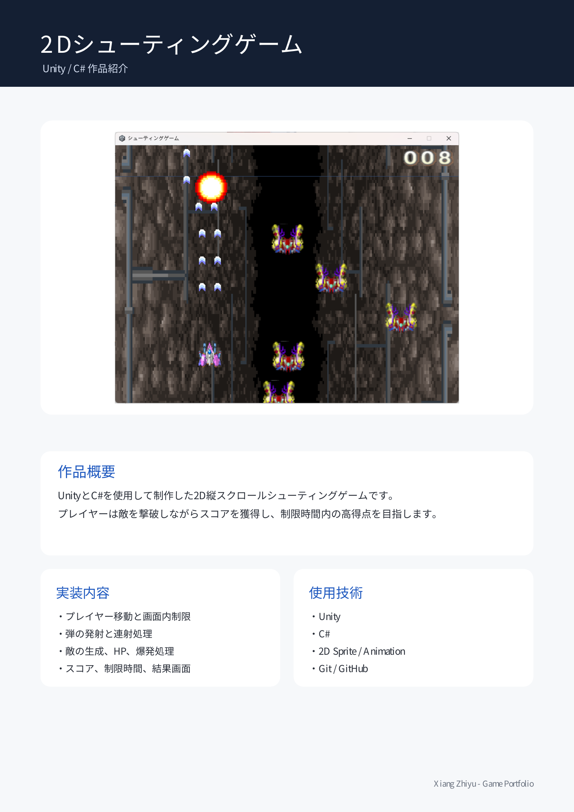
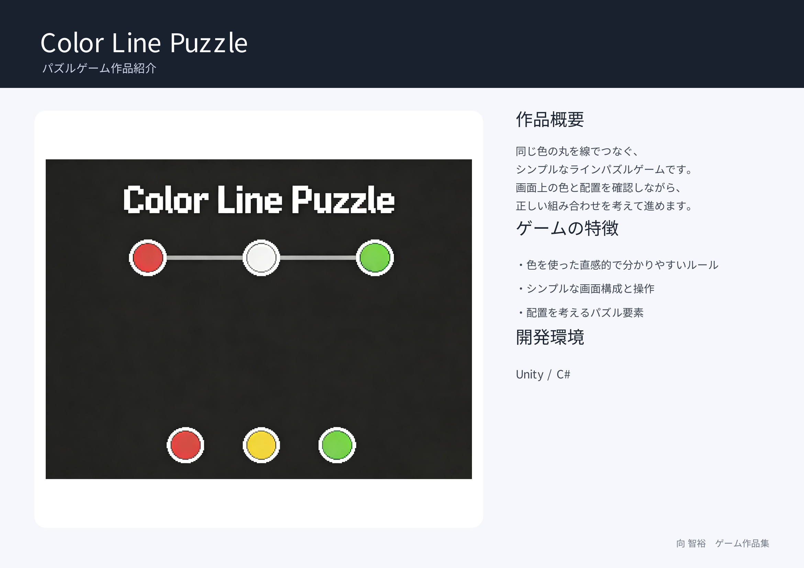

日本電子専門学校 ゲーム制作科
私は日本電子専門学校ゲーム制作科の学生です。
Unity、C#、C++を中心にゲームプログラミングを学んでいます。
個人制作だけでなく、GitHubを利用したチーム制作の経験もあります。
・Unity
・カード配布システム
・シャッフル処理
・GitHubを使用したチーム開発
Unityで制作した2Dシューティングゲームです。

同じ色の丸を線でつなぐパズルゲームです。

趣味は登山です。休日には山に登り、 体力づくりや気分転換をしています。